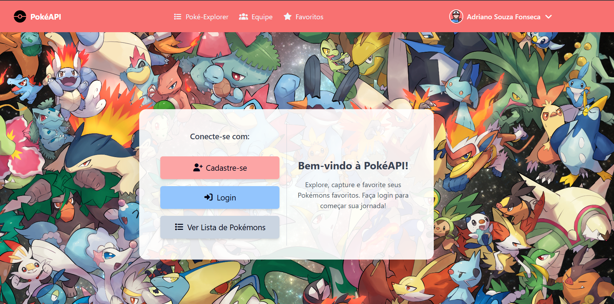
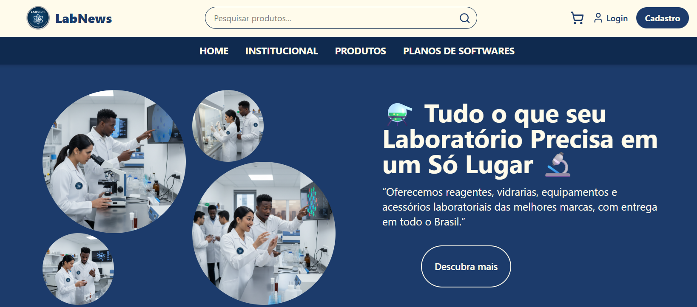
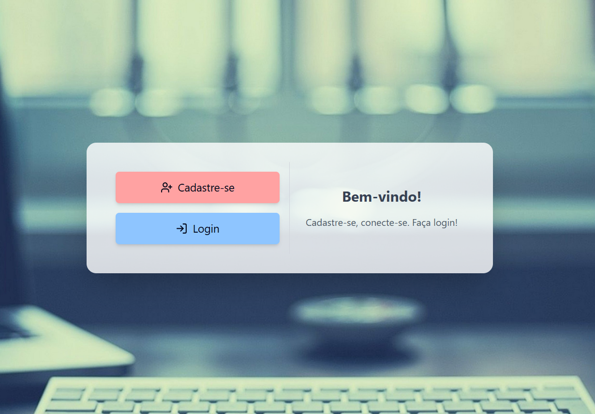
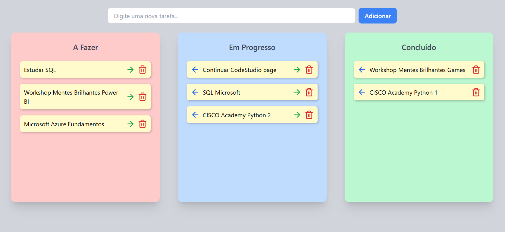
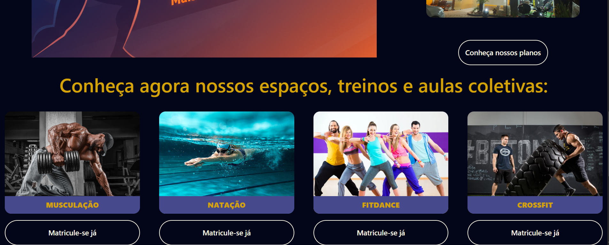
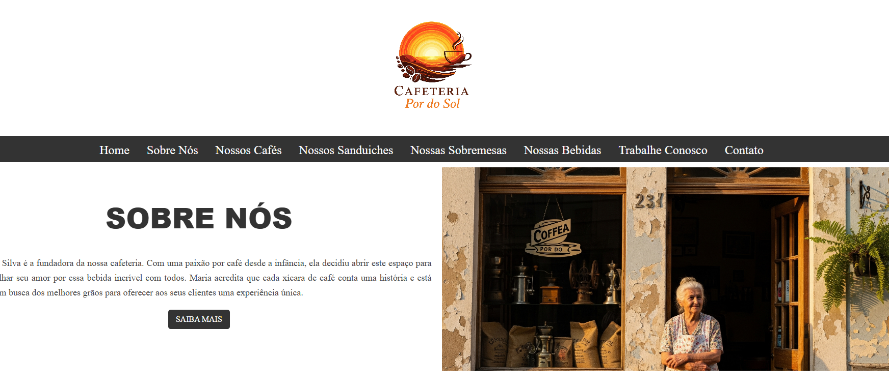

PokeApi-FullStack
Aplicação full-stack que consome a PokéAPI, com autenticação de usuários, sistema de favoritos e busca de Pokémons.
Ver Repositório
Ver Página

LabNews
Projeto front-end de uma loja de produtos químicos, com layout responsivo e componentes reutilizáveis.
Ver Repositório
Ver Página

Login-Register
Um projeto simples e funcional de login e cadastro de usuários feito em React, com interface moderna e validações básicas. Ideal para aprendizado ou como base para sistemas maiores de autenticação..
Ver Repositório
Ver Página

ToDoList
Um gerenciador de tarefas estilo Kanban, simples e funcional, feito com HTML + JavaScript puro + TailwindCSS via CDN.
Ver Repositório
Ver Página

Goldfit
Aplicação Web/Plataforma para gerenciamento e visualização de serviços, treinos e ofertas no nicho fitness e wellness. Foco em oferecer uma interface clara e completa para usuários se conectarem com programas de treino, planos, instrutores e conteúdos relacionados ao mundo fitness.
Ver Repositório
Ver Página

Cafeteria por do sol
Projeto “teste de cafeteria” — um site simples de demonstração de layout e interface para uma cafeteria.
Ver Repositório
Ver Página

List-Product-API
Este projeto implementa uma API REST básica que permite o cadastro, consulta, atualização e remoção de produtos. Ideal como base para microserviços de e-commerce, inventário ou protótipos rápidos.
Ver Repositório
Ver Página

Sistema de Gestão
Sistema de faturamento desenvolvido para gerenciamento financeiro, com autenticação de usuários (login e logout), cadastro e controle de faturas.
Ver Repositório
Ver Página